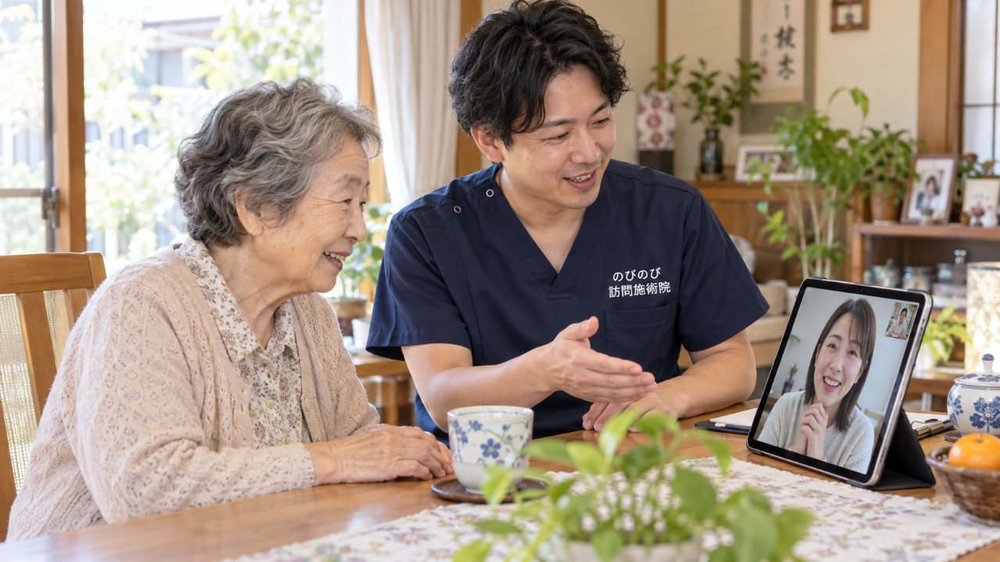

訪問鍼灸マッサージは、体をいたわるだけでなく、離れて暮らすご家族のための見守りの役割も果たせます。医師の同意にもとづく医療保険を使い、国家資格者が定期的に家へ伺って、顔色や体の調子、家での過ごし方をそのつど見守ります。自己負担は1種類の総額3,950円に対し1割で約395円が目安。気づいたことはご希望に応じてご家族へお伝えし、気になる変化があれば主治医や訪問看護、ケアマネジャーへの相談につなげます。地域で見守る目の一つとして、遠方のご家族の安心を支えます。週2回のペースなら、ひと月の自己負担はおよそ3,160円ほど（1割の方）になります。 施術は大阪府・兵庫県の対応エリアで、ご自宅にうかがって、はり・きゅう・マッサージを行います。離れて暮らす親が、ちゃんと過ごせているか心配。体は大丈夫か、元気にしているか。遠くに住んでいると、なかなか様子が分からず、不安がつのるものです。のびのび訪問施術院では、家から出るのがつらい方のもとへうかがい、鍼灸のケアを続けてきました。定期的に伺うことは、体をいたわるだけでなく、離れて暮らすご家族にとっての見守りの役割も果たせます。遠方のご家族の安心を、訪問がどう支えられるのかをお伝えします。
要点から。定期的に伺い、その日の様子をご家族にお伝えします。電話やメールなど受け取りやすい形も相談できます。
離れて暮らすと、なぜこんなに心配なのか
親と離れて暮らしていると、日々の様子が見えないぶん、心配は尽きません。ちゃんと食べているか、体を痛めていないか、気分は沈んでいないか、家で安全に過ごせているか。電話だけでは伝わらないことも多く、かといって頻繁に帰るのもむずかしい。
そうしたもどかしさを抱えるご家族は、けっしてめずらしくありません。「元気だよ」の一言の裏にある本当の様子を知りたい、というのが多くの方の願いです。お仕事を続けながら介護をされている方には、働きながら親の介護をしているご家族へもお役に立てるかもしれません。
定期的に訪れる人がいる、という安心
訪問鍼灸マッサージは、定期的にご自宅へ伺います。体をいたわるだけでなく、その方の様子を、そのつど見させていただくことになります。顔色や体の調子、家での過ごし方、気分の様子。
決まって訪れる人がいることは、離れて暮らすご家族にとって、大きな安心につながります。何かいつもと違う様子があれば、早めに気づける機会にもなります。
体の様子は、どうやって家族に伝わるの？
施術のたびに見えた体の様子や気づいたことは、ご希望に応じて、ご家族にお伝えできます。最近こわばりが和らいでいる、少し元気そうだ、あるいは気になる様子がある、といったことを共有します。伝える方法は、電話でも、文字で残るものでもかまいません。
遠くにいても親の様子が伝わってくることは、ご家族の安心の支えになります。どんな形でお伝えするのがよいか、ご相談しながら進めます。
気になる変化は、医療や多職種へつなぐ
訪問の中で、いつもと違う気になる変化に気づくこともあります。そうしたときは、ご家族にお伝えするとともに、必要に応じて、主治医や訪問看護、ケアマネジャーへの相談をおすすめします。
私たちだけで抱え込むのではなく、支える多くの方々と連携して、その方を見守ることを大切にしています。遠方のご家族に代わって、地域で見守る目の一つになれたらと考えます。
本人にとっても、心地よい時間になる
見守りという面だけでなく、施術そのものが、ご本人にとって心地よい時間になります。こわばりや痛みが和らぎ、体が楽になる。定期的に人と接し、体を気にかけてもらえる。
そうした時間は、離れて暮らす親御さんにとって、暮らしのはりや楽しみのひとつにもなります。体のケアと見守りを同時にお届けできるのが、家に伺う施術の良さです。
訪問先でうかがったお話｜ご家族から
施術のあと、ご家族がご本人に「こんだけ体楽やろ」と話しかけておられたことがあります。そばで見ていて「気持ちよさそう」と言われるご家族も。近所のスーパーまで歩けたことを、ご家族が喜んでおられたこともありました。
一方で、足のむくみが強くなって少し歩きづらい、とご家族から報告をいただくこともあります。気づいたことはその場で共有するようにしています。
ご家族と一緒に、支える形をつくる
遠方のご家族が、どんなことを心配し、どんな情報を知りたいかは、ご家庭によってさまざまです。どのくらいの頻度で、どんな形で様子をお伝えするか、ご家族のご希望に合わせて、相談しながら決めていきます。
離れていても、みんなで一人の親御さんを支える。その輪の一つに、私たちも加わらせていただけたらと思います。
連絡の頻度や方法を、あらかじめ決めておく
遠方のご家族との連携では、どのくらいの頻度で、どんな方法で様子をお伝えするかを、あらかじめ決めておくとスムーズです。毎回の施術のたびがよいか、それとも変わったことがあったときだけか。電話がよいか、文字で残るほうがよいか。
ご家族のご希望や、都合のよい方法に合わせて、無理なく続けられる形を一緒に決めていきます。こまやかな連絡が、離れて暮らす不安を和らげてくれます。
遠方でも、はじめやすいように
遠方にお住まいだと、契約や説明のために何度も足を運ぶのは大変です。ご相談は電話でも承りますし、ご本人のお宅に伺うときにご家族へ電話でつないでいただき、その場で状況を共有することもできます。
同意書の手配や、ケアマネジャー・訪問看護との連絡も、こちらでできる範囲で進めます。遠くにいても手続きで行き詰まらないよう、はじめの一歩からご一緒します。同意書を頼みにくいときは鍼灸の同意書を書いてもらえないときが参考になります。
もしものときに、そなえておく
離れて暮らしていると、もしものときにどう動くかが心配になります。急な体調の変化があったとき、誰に連絡し、どう対応するか。主治医や訪問看護、ケアマネジャーの連絡先を、ご家族も把握しておくと安心です。
私たちも、訪問の中で気になる変化に気づいたときは、ご家族や関わる方々へ速やかにお伝えし、必要な受診や相談につなげるよう努めます。日ごろから関わる者として、いざというときの備えの助けになればと思います。
毎回の記録を、離れていても見えるように
毎回の施術で見えたことは、記録として残し、ご家族と共有できます。前回と比べて表情がやわらかい、少し食が進んでいる、逆に少し元気がない、といった変化は、その場に立ち会えないご家族には見えにくいものです。
文章で残しておけば、後からゆっくり読み返せますし、帰省したときやケアマネジャーとの話し合いのときにも役立ちます。どこまで、どんな形で記録をお伝えするかは、ご家族のご希望に合わせて調整します。
まずは、ご相談から
離れて暮らす親のことで心配なこと、どんな見守りができるのか、遠慮なくお尋ねください。ご本人の状態や、ご家族のご希望をうかがいながら、体のケアと見守りをどんな形でお届けできるかを一緒に整理します。遠くにいるご家族の安心も、大切にしたいと考えています。
よくある質問
離れて暮らす親のことも見守ってもらえますか？
定期的に伺い、その日の様子をご家族にお伝えします。電話やメールなど受け取りやすい形も相談できます。
立ち会えなくても大丈夫ですか？
はい。連絡帳などで様子を残し、離れていても共有できます。
離れていても保険で受けられますか？
ご本人の慢性的な痛み・こわばりについて医師が必要と認め、通院がむずかしければ対象になる場合があります。
気になる変化はすぐ知らせてもらえますか？
「いつもと違う」様子に気づいたときは早めにお知らせし、必要なら受診をおすすめします。

一人暮らし（独居）でも訪問鍼灸マッサージは受けられる？ 離れて暮らす家族も安心できる備え
続きを読む
めまい・ふらつきで転倒が心配な高齢の方へ｜訪問鍼灸マッサージという選び方
続きを読む
茨木市の訪問鍼灸マッサージ｜通わず家で受けられる、痛み・しびれのケア
続きを読む
親が訪問施術を嫌がる・遠慮するときの、無理のない始め方
続きを読む
骨折後の筋力低下・廃用症候群が心配な方へ｜自宅で受ける訪問鍼灸マッサージ
続きを読む